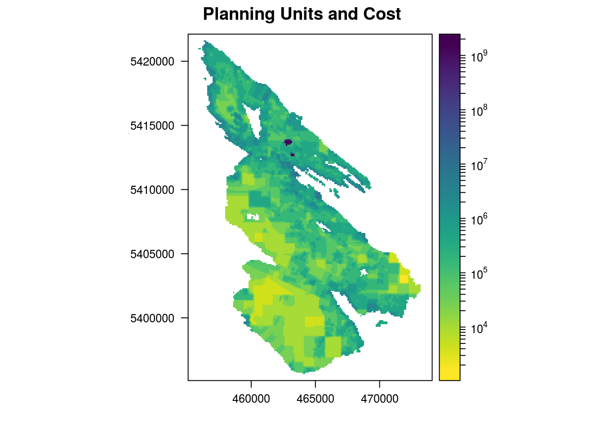
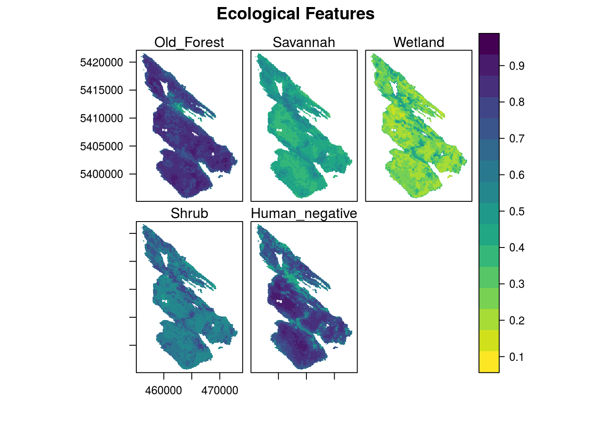
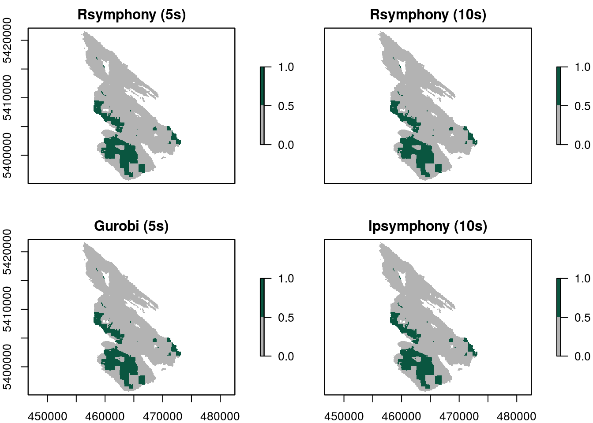

Salt Spring Island Worked Example
Introduction
The intent of this tutorial is to provide a worked example of how raster data can be incorporated into a conservation prioritization problem with prioritizr. For spatial shapefile input data, refer to the Tasmania vignette.
The data used here is a subset of a much larger dataset for the Georgia Basin obtained as part of an online Marxan-based planning tool created for the Coastal Douglas-fir Conservation Partnership (CDFCP). For simplicity, we focus only on Salt Spring Island, British Columbia. Salt Spring Island is central to the CDFCP region, which supports a very diverse and globally unique mix of dry forest and savanna habitats now critically threatened due to land conversion, exotic species invasion, and altered disturbance regimes. Known broadly as the Georgia Depression-Puget Lowlands, this region includes threatened Coastal Douglas-fir forest and Oak-Savannah habitats, also referred to as Garry oak ecosystems.

Figure 1. Extent of Coastal Douglas-fir Conservation Partnership Tool area and location of Salt Spring Island
For more information on the dataset refer to the Marxan tool portal and the tool tutorial.
This tutorial will use functions from the prioiritizr package. Users can refer to the vignettes built into the prioritizr package to familiarize themselves with the basic usage of prioritizr and the concepts behind the package.
library(prioritizr)
library(prioritizrdata)
library(rasterVis)
library(viridis)Exploring the data
This dataset contains two components. First, a single-band planning unit raster layer where each one hectare pixel represents a planning unit and contains its corresponding cost (BC Land Assessment 2015). Second, a raster stack containing ecological community feature data. Field and remote sensed data were used to calculate the probability of occurrence of five key ecological communities found on Salt Spring island. Each layer in the stack represents a different community type. In order these are; Old Forest, Savannah, Wetland, Shrub, and a layer representing the inverse probability of occurrence of human commensal species. For a given layer, the cell value indicates the composite probability of encountering the suite of bird species most commonly associated with that community type.
First, load the data into the R environment.
data(salt_pu) # planning units
data(salt_features) # biodiversity featuresLet’s have a look at the planning unit data. Note that we log-transformed the raster to better visualize the variation in planning unit cost.
print(salt_pu)## class : RasterLayer
## dimensions : 270, 190, 51300 (nrow, ncol, ncell)
## resolution : 100, 100 (x, y)
## extent : 455089.9, 474089.9, 5395114, 5422114 (xmin, xmax, ymin, ymax)
## coord. ref. : +proj=utm +zone=10 +datum=WGS84 +units=m +no_defs +ellps=WGS84 +towgs84=0,0,0
## data source : in memory
## names : SSI_cost7
## values : 2552, 1000000000 (min, max)levelplot(salt_pu, main = "Planning Units and Cost", zscaleLog = TRUE,
margin = FALSE, col.regions = rev(viridis(100)))
Next, let’s look at the feature data.
print(salt_features)## class : RasterStack
## dimensions : 270, 190, 51300, 5 (nrow, ncol, ncell, nlayers)
## resolution : 100, 100 (x, y)
## extent : 455089.9, 474089.9, 5395114, 5422114 (xmin, xmax, ymin, ymax)
## coord. ref. : +proj=utm +zone=10 +datum=WGS84 +units=m +no_defs +ellps=WGS84 +towgs84=0,0,0
## names : Old_Forest, Savannah, Wetland, Shrub, Human_negative
## min values : 0.3595050, 0.2979212, 0.1132785, 0.4013101, 0.3703639
## max values : 0.9312289, 0.6608167, 0.6434712, 0.8249719, 0.9032656levelplot(salt_features, main = "Ecological Features", layout = c(3, 2),
col.regions = rev(viridis(100)))
Example Usage
We will only cover a few of the many ways that you can parameterize a problem in this tutorial. The examples we have chosen are intended to highlight how the use of different parameters can impact the solution, or in some cases have very little impact.
Formulating the Problem
In these examples we use the minimum set objective to fulfill all targets and constraints for the smallest cost. This objective is the same as the objective function used by Marxan. For simplicity, we will set biodiversity targets at 17% to reflect the Aichi Biodiversity Target 11. Because properties on Salt Spring island can either be acquired in their entirety or not at all, we leave the decision framework as the default; binary decision making. This means the planning unit is either selected in the solution or not selected - no partial planning units.
To create a problem object:
p1 <- problem(salt_pu, salt_features) %>%
add_min_set_objective() %>%
add_relative_targets(0.17) %>%
add_binary_decisions()Note that the %>% notation is necessary to attach the objectives and targets to the correct problem object. As binary decisions is the default, it does not explicitly need to be added to the problem, but we do add it here for clarity.
Solving the problem
Prioritizr supports three different integer linear programming solver packages: gurobi, Rsymphony, and lpsymphony. There are pros and cons to each of these, but the actual impact of solver type on the planning units in the solution should be relatively minor.
First, remember that the solvers must be installed. You can check if these packages are installed by running the code below.
library(gurobi)
library(Rsymphony)
library(lpsymphony)Trying out these different solvers may look something like this:
titles <- c() # create vector to store plot titles
s <- stack() # create empty stack to store solutions
# create new problem object with added solver
# limit the time spent searching for the optimal solution to 5 seconds
if (requireNamespace("Rsymphony", quietly =T)){
titles <- c(titles, "Rsymphony (5s)")
p2 <- p1 %>%
add_rsymphony_solver(time_limit = 5)
s <- addLayer(s, solve(p2))
}
if (requireNamespace("Rsymphony", quietly = T)){
titles <- c(titles, "Rsymphony (10s)")
p3 <- p1 %>%
add_rsymphony_solver(time_limit = 10)
s <- addLayer(s, solve(p3))
}
if (requireNamespace("gurobi", quietly = T)){
titles <- c(titles, "Gurobi (5s)")
p4 <- p1 %>%
add_gurobi_solver(gap = 0.1, presolve = 2, time_limit = 5)
s <- addLayer(s, solve(p4))
}
if (requireNamespace("lpsymphony", quietly = T)){
titles <- c(titles, "lpsymphony (10s)")
p5 <- p1 %>%
add_lpsymphony_solver(gap = 0.1, time_limit = 10)
s <- addLayer(s, solve(p5))
}We can now have a look at the solutions:
plot(s, main = titles, breaks = c(0, 0.5, 1), col = c("grey70", "#0A5640"))
Looking at these plots, it is clear that the solution is not highly sensitive to solver choice. At a glance it also appears that search time settings do not largely impact the solution (2 seconds vs. 5 seconds), but a larger analysis would be necessary to test the true sensitivity for this dataset.
Considering connectivity
Isolated and fragmented populations are often more vulnerable to extinction. Because of this, landscape connectivity is a key focus of most conservation planning exercises. Maintaining a natural network of connected landscapes may be essential for the long-term persistence of wildlife populations and ecosystems. There are a number of ways that connectivity can be added to a conservation planning problem in prioritizr using constraints and penalties.
We use thegurobi solver in remainder of examples, as it is the quickest of the three solvers to find solutions.
# basic problem formulation
pc <- problem(salt_pu, salt_features) %>%
add_min_set_objective() %>%
add_relative_targets(0.17) %>%
add_binary_decisions() %>%
add_gurobi_solver(gap = 0.1, presolve = 2)titles2 <- c() # create vector to store plot titles
s2 <- stack() # create empty stack to store solutions
# no connectivity requirement
titles2 <- c(titles2, "No Connectivity")
s2 <- addLayer(s2, solve(pc))
# require at least three neighbors for each selected planning unit
titles2 <- c(titles2, "Neighbor Constraints (three)")
pc3 <- pc %>% add_neighbor_constraints(2)
s2 <- addLayer(s2, solve(pc3))
# impose small penalty for high boundary length
titles2 <- c(titles2, "Boundary Penalty (Low)")
pc5 <- pc %>% add_boundary_penalties(50, 1)
s2 <- addLayer(s2, solve(pc5))
# impose large penalty for high boundary length
titles2 <- c(titles2, "Boundary Penalty (High)")
pc6 <- pc %>% add_boundary_penalties(500, 1)
s2 <- addLayer(s2, solve(pc6))
# plot solutions
plot(s2, main = titles2, breaks = c(0, 0.5, 1), col = c("grey70", "#0A5640"))
Users may also wish to explore the add_connectivity_penalties and add_corridor_constraints, which both require additional data on conductance and landscape resistance but may strengthen the ecological basis of adding a connectivity requirement.